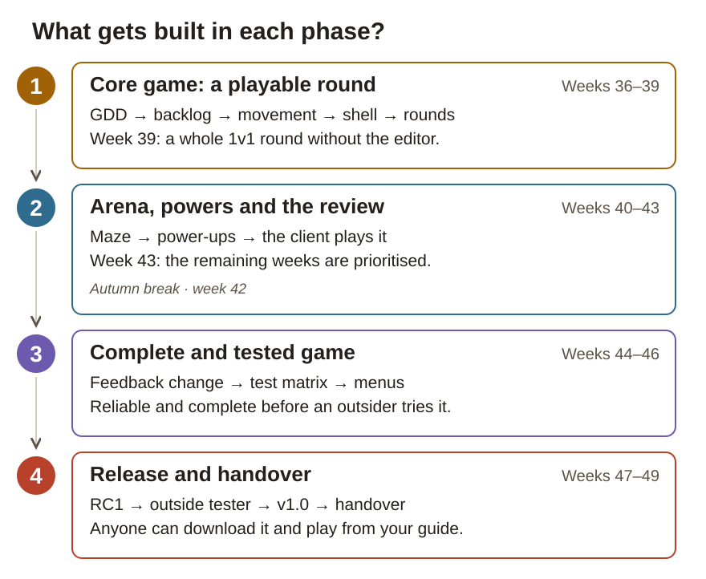

Printable work pack · game project
Ping Pong Tanks: your own Game Design Document built in Unity into a playable release — bouncing shells, a generated maze and power-ups
Weeks 36–49 · autumn break in week 42 · handover Fri 4 Dec 2026
This pack is a schedule and a checklist for situations where the site is not open. The project journal is written on the site and pushed to the repository's project-docs folder. A tick in this booklet is not a submission — the work always lives in the Git repository.
The repository is public: no personal data, no school identifiers and no other people's names go into Git.
The Game Design Document (GDD) is your own — the implementation is judged against it.
Ping Pong Tanks is a two-player tank arena on one keyboard. The players fire shells that ricochet through a generated maze, grab power-ups and play quick rounds: one hit destroys a tank and the survivor scores.

1. Core game: a playable round · weeks 36–39. You break the GDD into a prioritised backlog and set up the Unity project, then build movement, the bouncing shell and a whole round with scoring. They come first because every later feature drives, shoots or scores on top of them.
2. Arena, powers and the review · weeks 40–43. You replace the test arena with a generated maze and add three data-driven power-ups. In week 43 the client plays this version, and together you decide what fits into the remaining weeks.
3. Complete and tested game · weeks 44–46. You answer the client's feedback through a pull request, run the whole test matrix and build the menu path. The game becomes reliable and complete before anyone outside the project tries it.
4. Release and handover · weeks 47–49. An outside tester starts the release candidate from your written guide alone. You fix only blocking bugs, release v1.0 and hand the MVP and the documentation over on 4 December.
A work step is one numbered item in this pack and on the site. When a work step changes the game, do each change as a GitHub issue: what to do, a done-when condition and the commit that closes it. Test results go into project-docs/tests.md at once; the weekly summary goes into the project journal at the end of the week.
| Week | Dates | Topic of the week | Phase |
|---|---|---|---|
| 36 | 31 Aug – 4 Sep | GDD into tasks, project set up | 1 |
| 37 | 7–11 Sep | Tanks move — two players, one keyboard | 1 |
| 38 | 14–18 Sep | The bouncing shell | 1 |
| 39 | 21–25 Sep | Rounds, scoring and the five-second rule | 1 |
| 40 | 28 Sep – 2 Oct | Generated maze and data out of the code | 2 |
| 41 | 5–9 Oct | Power-ups and the HUD | 2 |
| 42 | 12–16 Oct | Autumn break — no project work | – |
| 43 | 19–23 Oct | Client review and prioritisation | 2 |
| 44 | 26–30 Oct | Feedback change and the chosen extra feature | 3 |
| 45 | 2–6 Nov | Testing week and pair debugging | 3 |
| 46 | 9–13 Nov | Menus and settings | 3 |
| 47 | 16–20 Nov | Release candidate, external testing and security | 4 |
| 48 | 23–27 Nov | Release v1.0 (the MVP) | 4 |
| 49 | 30 Nov – 4 Dec | Handover week | 4 |
Handover no later than Fri 4 Dec 2026. The site has the detailed task instructions, the implementation help and the project journal.
How this week connects to the whole project: Your GDD already says what the game is, but not in which order it gets built. This week you scope the required core (P0) with your instructor, break it into GitHub issues and set up a public repository with an empty Unity project. From week 37 on, every feature starts from one of these issues.
Week goal: Anyone who opens your public repository can see what gets built first: the P0 issues in the milestone "MVP 4 Dec".
Work step 1 / 4 · Write a question list from the brief and your GDD
project-docs/ and write each answer beside its question. A question without an answer stays marked as open.Done when: The question list covers the gaps between the brief and the GDD, and every question is either answered or marked open.
Save your evidence: The question list in project-docs/. The open items go into the week 36 journal entry.
Work step 2 / 4 · Scope P0 with your instructor and break it into issues
Done when: The P0 scope is agreed with your instructor and recorded in the plan, and every piece of P0 is an issue draft with a done-when condition.
Save your evidence: The P0 scope and who approved it in the plan and in the week 36 journal entry. The drafts become GitHub issues in work step 3.
Work step 3 / 4 · Set up the Unity project in a public GitHub repository
Unity.gitignore from GitHub's gitignore collection, so that Library/, Temp/ and build folders stay out of Git.git init, make the first commit, create a public GitHub repository and push. The README says in one paragraph which game, who builds it and by when.project-docs/ with the subfolders meetings/ and chains/, and put your GDD in as project-docs/gdd.md.Done when: A fresh clone of the repository opens in Unity without errors by following the README alone, and the milestone "MVP 4 Dec" holds the P0 issues.
Save your evidence: Commit and push. The repository address and the hash of the first commit go into the week 36 journal entry.
Work step 4 / 4 · Name the game team and hold the first weekly meeting
project-docs/meetings/week36.md: who attended, by role, and what was agreed, with issue numbers.gdd-implementation-plan.md from the Plan page, save it in project-docs/ and commit it.Done when: The meeting note lists the attendees by role and the agreements with issue numbers, and the implementation plan is in project-docs/.
Save your evidence: project-docs/meetings/week36.md and project-docs/gdd-implementation-plan.md, committed and pushed. People appear in the repository only by role; if your instructor needs the names, send them in Teams.
End-of-week check: An outsider can see from the repository what is being built and in which order: the README describes the game in one paragraph, the milestone "MVP 4 Dec" holds the P0 issues, and the project compiles as an empty scene.
In the Git repository before you tick the box: A public repository whose README, P0 milestone and first commit say what is being built — plus the question list with answers and the meeting note in project-docs.
How this week connects to the whole project: The repository and the P0 issues from week 36 are ready, but nothing moves yet. Now two tanks drive on one keyboard through Unity's 2D physics, because the shell's ricochets and every later collision depend on it. Next week the same tanks get a weapon.
Week goal: Two players drive their tanks at the same time on one keyboard, and the tanks stop cleanly at walls.
Work step 1 / 3 · Build the tank prefab and place two tanks in a test arena
Assets/Prefabs/. Place two instances of it in the scene and give them different colours.Done when: One tank prefab exists, and two instances of it in different colours stand in a walled test arena that the camera shows whole.
Save your evidence: The prefab and the scene, committed with a message that names the issue.
Work step 2 / 3 · Move two tanks with physics on one keyboard
TankMovement.cs with serialised key fields, so the same script serves both players with different keys.Update() and move the tank through the Rigidbody2D in FixedUpdate(). Do not move it with transform calls.[SerializeField] float so that you can tune it by feel.Done when: Both tanks move at the same time on one keyboard without disturbing each other, and they stop at walls without jittering.
Save your evidence: Small commits that name the issue, for example "Tank movement: two players, one keyboard (#3)". Your input and Rigidbody2D settings go into the week 37 journal entry.
Work step 3 / 3 · Run test cases T01–T02 and hold the weekly meeting
project-docs/tests.md, write test case T01 (normal: both tanks move at once in different directions) and T02 (boundary: a tank hits a wall at full speed).project-docs/meetings/week37.md with the agreements and issue numbers.Done when: T01 and T02 each have an expected result written before the run and an actual result, and the meeting note is in the repository.
Save your evidence: project-docs/tests.md and project-docs/meetings/week37.md, committed. The results of T01–T02 go into the week 37 journal entry.
End-of-week check: Two players can move at the same time on one keyboard without the keys interfering with each other, and the tanks stop at a wall without jittering.
In the Git repository before you tick the box: A playable build with two tanks moving, test cases T01–T02 with results in tests.md, and the movement commits.
How this week connects to the whole project: The tanks from week 37 move through physics, so a shell can now bounce off the same walls. You build the GDD's core rule exactly: one shell per player, endless ricochets, about ten seconds of life and friendly fire. Every later shell variant, such as a triple shot, inherits this logic.
Week goal: A shell ricochets off the walls without slowing down, disappears after about 10 seconds and can destroy its own shooter.
Work step 1 / 4 · Build the bouncing Projectile prefab
Assets/Prefabs/ with a Projectile.cs script, which will hold its lifetime and hits.Done when: The Projectile prefab has Bounciness 1 and Friction 0 on the shell and on the walls, Linear Drag 0 and continuous collision detection.
Save your evidence: The Projectile prefab, committed with a message that names the issue. The physics material settings go into the week 38 journal entry.
Work step 2 / 4 · Let each player fire one shell at a time
TankShooting.cs: Space for player 1 and M for player 2 spawn a shell at the barrel, in the barrel's direction.Done when: Each player can fire only when their previous shell is gone, and the shell leaves the barrel slightly faster than the tank moves.
Save your evidence: TankShooting.cs, committed with a message that names the issue. How you limited it to one shell goes into the week 38 journal entry.
Work step 3 / 4 · Make shells despawn after ~10 s and destroy any tank they hit
Projectile.cs, destroy the shell on a timer of about 10 seconds, also while it keeps ricocheting.Destroy and Debug.Log are enough now; proper death comes in week 39.Done when: A shell disappears after about 10 seconds, and a hit destroys any tank, including the one that fired it.
Save your evidence: Projectile.cs, committed with a message that names the issue.
Work step 4 / 4 · Run test cases T03–T05 and playtest the ricochet
tests.md: test case T03 (normal), a direct shot hits the opponent. T04 (boundary), five or more ricochets without slowing down. T05 (boundary), despawn at 10 s ±0.5 s.project-docs/meetings/week38.md.Done when: T03–T05 each have an expectation written before the run and an actual result, and the ricochet feedback is in the meeting note.
Save your evidence: tests.md and meetings/week38.md committed, with a short video or image sequence of the ricocheting shell in project-docs/. The results go into the week 38 journal entry.
End-of-week check: The shell bounces off walls without losing speed, disappears in about 10 seconds, kills its own shooter too, and a new shell can only be fired once the previous one is gone.
In the Git repository before you tick the box: A video or image sequence of the ricocheting shell, test cases T03–T05 with results, and the Projectile prefab commit.
How this week connects to the whole project: Moving tanks and bouncing shells are still only a technical demo. This week a hit ends the round, the right player scores and the GDD's five-second rule decides draws. After it phase 1 is complete: a whole 1v1 round that the players run without touching the editor.
Week goal: A whole round plays out without the editor: a hit ends it, the right player scores and a new round starts.
Work step 1 / 3 · Destroy a hit tank and clean up the round
Destroy with a proper death: the tank leaves play with a simple effect.Done when: A hit tank disappears with an effect and no longer reacts to its keys, and no shells are left on the field when the round ends.
Save your evidence: Commits that name the issue.
Work step 2 / 3 · Score rounds with the five-second rule and restart them
Done when: Rounds end, score and restart without touching the editor, and two deaths within 5 s give no point.
Save your evidence: The GameManager, committed with a message that names the issue. How you built the 5 s rule and stored the scores goes into the week 39 journal entry.
Work step 3 / 3 · Run test cases T06–T08 and play rounds with the game team
tests.md: test case T06 (normal), player 1 hits player 2 and scores. T07 (boundary), both die within 3 s: no point. T08 (boundary), both die 6 s apart.project-docs/meetings/week39.md, record whether the round rhythm matches the GDD's "quick, tactical matches".Done when: T06–T08 have expectations written before the run and actual results, and the meeting note judges the round rhythm.
Save your evidence: tests.md and meetings/week39.md, committed. The results of T06–T08 go into the week 39 journal entry.
End-of-week check: A whole round works without touching the editor: destruction, a point to the right player (or to neither, under the 5 s rule), and an automatic new round.
In the Git repository before you tick the box: A whole round without the editor: scoring, the 5 s rule tested (T06–T08) and the playtest note week39.md.
How this week connects to the whole project: Rounds work, but they are still played in the fixed test arena. Now the depth-first search (DFS) builds a 10×10 maze from data kept outside the code, and the tanks start fairly apart. The data store you choose here is used again for the power-ups next week.
Week goal: Every round starts in a newly generated 10×10 maze in which every tile is reachable, and the tanks start at least 3 tiles apart.
Work step 1 / 4 · Compare the data stores before you implement anything
Done when: The comparison covers all three options, names the store chosen for arena and power-up data with its reason, and was written before the maze code.
Save your evidence: The comparison in the GitHub issue or the journal. The choice and its reasoning in the plan (project-docs/gdd-implementation-plan.md).
Work step 2 / 4 · Write the depth-first search (DFS) maze generator
MazeGenerator.cs as a plain C# class with no GameObject references, so that it can be tested without a scene.Done when: The generator produces a 10×10 maze in which every cell is visited, and you can explain each step of it from your paper drawing.
Save your evidence: MazeGenerator.cs committed, and a photo of the paper drawing in project-docs/. Explain the DFS in your own words in the week 40 journal entry.
Work step 3 / 4 · Build the arena from data with fair spawn positions
MazeBuilder.cs (a MonoBehaviour) that turns the generator's result into wall and floor objects.ArenaConfig asset.Done when: Changing the arena size in the data changes the maze without any code change, the tanks always start at least 3 tiles apart, and every round starts in a newly generated maze.
Save your evidence: MazeBuilder.cs and the arena data, committed. The distance measure goes into the week 40 journal entry.
Work step 4 / 4 · Run test cases T09–T10 for traversability and spawn distance
tests.md: test case T09 (normal), 10 generations are all traversable. T10 (boundary), 20 spawn draws all end at least 3 tiles apart.Done when: T09 and T10 have expectations written before the run, a stated way of verifying and actual results.
Save your evidence: project-docs/tests.md committed, with screenshots of generated mazes. The results of T09–T10 go into the week 40 journal entry.
End-of-week check: Every generated 10×10 maze is fully traversable (DFS guarantees it), the tanks start at least 3 tiles apart, and the arena size is read from data — you can change the size without touching code — and every round starts in a newly generated maze.
In the Git repository before you tick the box: The written data store comparison, the paper drawing of the depth-first search, generated mazes and test cases T09–T10.
How this week connects to the whole project: The maze from week 40 now gets the GDD's second core promise: chaotic power-ups. Each power-up is data in the store you chose in week 40, not its own if branch, and the HUD shows who holds what. That keeps the extra power chosen in the week 43 review cheap to add.
Week goal: Speed boost, slowness and shield appear on the field and change play, and both players can see from the HUD who holds which power.
Work step 1 / 3 · Define the three power-ups as data
PowerUpData with a name, an icon, a duration and an effect type, in the data store you chose in week 40 (for example a ScriptableObject).SpeedBoost (for example SpeedBoost.asset): duration 10 s, speed ×1.2 (+20 %) for the player who picks it up.Slowness (for example Slowness.asset): duration 10 s, speed ×0.8 (−20 %), targeting the opponent.Shield (for example Shield.asset): lasts 15 s or absorbs one hit, whichever comes first.Done when: Three power-ups are defined as data with their durations and effects, and no power has its own if branch in the code.
Save your evidence: The power-up data in your chosen store (for example the PowerUpData script and three assets in Assets/Data/PowerUps/), committed. Why data and not code goes into the week 41 journal entry.
Work step 2 / 3 · Spawn power-ups and apply one power at a time
PowerUpSpawner.cs: about every 2 seconds, pick a free normal tile with no wall and no other pickup.PowerUpRunner.cs that ends the effect after its duration, also when the tank dies in the middle of it.Done when: Power-ups appear about every 2 seconds at the centres of free tiles, a player holds at most one power, and every effect ends on time.
Save your evidence: The spawner, pickup and runner scripts, committed with messages that name the issue. How you timed the effects goes into the week 41 journal entry.
Work step 3 / 3 · Show active powers in the HUD and run test cases T11–T12
tests.md: test case T11 (normal), a speed boost lasts 10 s and then reverts. T12 (error), a second pickup during an active power fails and stays on the field.Done when: A spectator can see both players' powers from the HUD and the tanks, and T11–T12 have expectations and actual results.
Save your evidence: A HUD screenshot and tests.md, committed. The results of T11–T12 go into the week 41 journal entry.
End-of-week check: Three powers work with their durations, a player can only hold one at a time (a new one is not picked up before the old one is spent — GDD), and a spectator can see both players' state from the HUD.
In the Git repository before you tick the box: Three power-up assets as data, a HUD screenshot and test cases T11–T12 with results.
How this week connects to the whole project: Phases 1 and 2 have produced a whole playable match: movement, shell, rounds, maze and three powers. Now the client plays it, and you decide together what fits into the remaining weeks, because the GDD holds more than they can carry. No new code is written; this decision steers weeks 44–49.
Week goal: The client has played the game, and a signed-off decision says what gets built in week 44 and what moves to P1 or P2.
Work step 1 / 3 · Demo the playable build and let the client play it
Done when: The client has played the build themselves, and their comments are written down word for word.
Save your evidence: The quotes go into the review note in work step 2. What you demonstrated and how goes into the week 43 journal entry.
Work step 2 / 3 · Write the review note with the client's words kept apart
project-docs/reviews/week43.md.Done when: The note has the client's quotes and your interpretation in separate parts, and part 2 ends with your proposal.
Save your evidence: project-docs/reviews/week43.md, committed. The client's most important comment goes into the week 43 journal entry as a quote.
Work step 3 / 3 · Decide the priorities with the game team and update the plan
meetings/week43.md.Done when: A named decision says what gets built in week 44 and what moves to P1 or P2, and your instructor has signed it off.
Save your evidence: The decision in the review note and in the updated project-docs/gdd-implementation-plan.md, plus meetings/week43.md. The reasoning and what you left out go into the week 43 journal entry.
End-of-week check: The note holds the client's own words, your interpretation separately, and a named decision: what gets built in week 44, what moves to P1/P2. The instructor has signed off on the decision.
In the Git repository before you tick the box: The review note in the client's words, the recorded prioritisation decision and the updated implementation plan.
How this week connects to the whole project: The review in week 43 named one feedback change and one extra feature. Now you build them on top of the week 38 and 41 systems, and the feedback change goes into main through a branch and a pull request. For the first time main holds a working game worth protecting.
Week goal: The client's feedback is answered by a merged pull request, and the feature chosen in the review is playable.
Work step 1 / 4 · Make the feedback change on a branch and open a pull request
git checkout -b fix/review-week43, so that main keeps working while you make the change.project-docs/reviews/week43.md.Done when: An open pull request to main holds only the feedback change, and its description makes clear which feedback it answers.
Save your evidence: The pull request in GitHub. Its number and the feedback it resolves go into the week 44 journal entry.
Work step 2 / 4 · Build the feature chosen in the review on the existing systems
Done when: The chosen feature works in a real match and uses the existing shell or power-up code.
Save your evidence: Commits that name the feature's issue. How the feature leans on the week 38 or 41 systems goes into the week 44 journal entry.
Work step 3 / 4 · Run a game team playtest and record a shared assessment
project-docs/meetings/week44-playtest.md.Done when: The playtest note holds at least three observations and a shared assessment.
Save your evidence: project-docs/meetings/week44-playtest.md, committed. The main findings go into the week 44 journal entry.
Work step 4 / 4 · Run test cases T13–T14 and merge the reviewed pull request
tests.md: test case T13 (normal), the chosen feature in normal play. T14 (boundary), the feature against a GDD rule. For a triple shot: independent ricochets, and the one-shell rule.project-docs/meetings/week44.md.Done when: T13–T14 have expectations and actual results, and main holds the merged pull request with its review comment.
Save your evidence: tests.md and meetings/week44.md committed; the merged pull request in GitHub. The results of T13–T14 go into the week 44 journal entry.
End-of-week check: Main holds a merged PR whose description makes clear which feedback it answers; the feature works; the playtest note holds at least three shared observations and a shared assessment.
In the Git repository before you tick the box: A merged PR that references the feedback, the playable feature, the playtest note and test cases T13–T14.
How this week connects to the whole project: The feature weeks left test cases T01–T14 and the bugs you found along the way. This week they become one test matrix that you run as a whole, and three real bugs are written up as complete debugging chains. The game gets no new features, so the release candidate in week 47 starts from a tested game.
Week goal: At least 12 test cases have been run with recorded results, and three bugs are documented from observation to regression test.
Work step 1 / 4 · Complete the test matrix from the GDD's testing list
project-docs/tests.md as one matrix: id, class, expectation, result.Done when: The matrix has at least 12 test cases, each with an expectation written before the run, in roughly equal thirds of normal, boundary and error cases.
Save your evidence: project-docs/tests.md, committed.
Work step 2 / 4 · Run every test case again and record each result
Done when: Every row of the matrix has a dated result, and T01–T14 have been run again this week.
Save your evidence: tests.md, committed. A summary of the matrix (how many OK, how many fixed) goes into the week 45 journal entry.
Work step 3 / 4 · Solve one bug with a debugging pair
project-docs/ (for example meetings/week45-debug-pair.md).Done when: The pair note holds both roles, both sets of observations, the breakpoints and the cause of the bug.
Save your evidence: The pair note in project-docs/, committed. What pair debugging showed about your own way of hunting bugs goes into the week 45 journal entry.
Work step 4 / 4 · Finish three complete debugging chains
project-docs/chains/, for example C1-corner-passthrough.md.meetings/week45.md.Done when: Three chains in project-docs/chains/ each have all six parts, or you have raised the lack of real bugs with your instructor.
Save your evidence: project-docs/chains/ and meetings/week45.md, committed. The hardest bug and its cause go into the week 45 journal entry.
End-of-week check: Every row of the matrix has an expectation recorded before the run and the result of the run; the three chains hold an observation, reproduction steps, the cause, the fix commit, a retest and a regression test; the pair note holds both roles and both sets of observations.
In the Git repository before you tick the box: The run test matrix (≥12 rows), three complete debugging chains and the pair debugging note.
How this week connects to the whole project: Until now the game has started straight into a match. Now it gets the menu path from the GDD's user interface (UI) chapter, settings that persist and a pause that stops the timers. The outside tester in week 47 starts exactly here, so the menus must work the first time.
Week goal: Players start a match, change the settings and pause from the menus alone, and the settings are still there on the next launch.
Work step 1 / 3 · Build the main menu and the pause menu
Time.timeScale so that the power-up timers and the 5 s rule stop while the game is paused.Done when: A player can start a match, pause it, restart it and quit from the menus without touching the editor.
Save your evidence: The menu and pause commits, with messages that name the issues. The scene or overlay decision goes into the week 46 journal entry.
Work step 2 / 3 · Save the settings and block duplicate tank colours
Done when: The settings are still there after the game is closed and opened again, and the same colour cannot be picked twice.
Save your evidence: Commits that name the issues. What you save to PlayerPrefs and why goes into the week 46 journal entry.
Work step 3 / 3 · Run test cases T15–T16 for saved settings and colours
tests.md: test case T15 (normal), changed settings survive closing and reopening. T16 (error), picking the same colour for both is blocked with a visible reason.Done when: T15 and T16 have expectations written before the run and actual results.
Save your evidence: tests.md, committed. The results of T15–T16 go into the week 46 journal entry.
End-of-week check: The game can be started, the settings changed and a match paused without touching the editor; the settings are still there on the next launch; the same player colour cannot be picked twice.
In the Git repository before you tick the box: The playable menu path, PlayerPrefs settings persistence (T15) and the duplicate colour block (T16).
How this week connects to the whole project: The game is complete and tested, but so far only you have started it. Now you build the first release candidate (RC1), and an outside tester starts it on another machine from your written guide alone. You also check the public repository for secrets before the release in week 48.
Week goal: Someone outside the project starts the release candidate on another machine using only your written guide.
Work step 1 / 4 · Build release candidate v1.0-rc1 and test it yourself
v1.0-rc1.Done when: v1.0-rc1 starts from a clean folder and a whole match can be played in it.
Save your evidence: The RC build settings go into the week 47 journal entry.
Work step 2 / 4 · Write the installation and gameplay guide
README.md or INSTALL.md.Done when: Someone who has never seen the game can find in the guide how to download, start and play it.
Save your evidence: The guide, committed to the repository.
Work step 3 / 4 · Let an outside tester start the game from the guide alone
project-docs/ (for example reviews/week47-outside-test.md).Done when: The tester got through a whole match without spoken help, and every hesitation is on a fix list for the guide.
Save your evidence: The test note in project-docs/, committed. Where the tester hesitated and how you fixed the guide go into the week 47 journal entry. If your instructor needs the tester's name or exact words, send them in Teams.
Work step 4 / 4 · Review your repository's security with exact references
git log and the files for keys, passwords and tokens.ProjectSettings/ holds no keys.Done when: The security review names the files and commits it checked and what it found.
Save your evidence: The review in project-docs/ (for example security-review.md), committed. Its findings go into the week 47 journal entry.
End-of-week check: The tester got all the way through a match without spoken help; every point where they hesitated is recorded as a fix list for the guide; the security review names the files and commits it checked. After the RC, only blocking bugs get fixed.
In the Git repository before you tick the box: The RC build, the written guide, the tester's findings by role and the security review with references.
How this week connects to the whole project: Release candidate RC1 and the tester's fix list from week 47 are your starting point. You fix only blocking bugs, release v1.0 on the agreed channel and freeze the content. That leaves the last week free for the handover.
Week goal: Anyone can download Ping Pong Tanks v1.0 from the release page and play a match on a clean machine.
Work step 1 / 3 · Fix only blocking bugs and update the guide
INSTALL.md.Done when: Every blocking bug on the fix list is fixed and every guide fix is in the guide, and nothing else has changed.
Save your evidence: Commits that name the fixes they make.
Work step 2 / 3 · Publish release v1.0 with the build and its scope description
v1.0.Done when: Release v1.0 is public with its build files, and its description separates what the MVP contains from what was left out.
Save your evidence: The release link goes into the week 48 journal entry.
Work step 3 / 3 · Test the release in a clean environment and freeze the content
project-docs/ what you did and what happened.Done when: The release plays on a clean machine by the guide, the README matches the GDD's controls and rules, and the content freeze commit exists.
Save your evidence: The clean-environment report, the README and the LICENSE, committed. The LICENSE decision and what ended up as follow-up or optional (P1/P2) go into the week 48 journal entry.
End-of-week check: An outsider can download the release and play a match on a machine that has never had the project on it; the README matches the GDD's controls and rules; the release page states what the MVP contains and what was deliberately left out (P1/P2).
In the Git repository before you tick the box: GitHub Release v1.0, the clean-environment test report and the final README + LICENSE.
How this week connects to the whole project: Thirteen weeks of commits, tests, notes and a release already exist. This week you make them findable with exact references, rehearse the demo and write the self-assessment. Nothing is produced afterwards: anything missing is recorded as missing.
Week goal: The client receives the MVP and documentation in which every claim points to exact evidence.
Work step 1 / 3 · Finish the project documentation with exact references
project-docs/.Done when: Every claim in the documentation has at least one exact reference, and anything missing is marked as missing.
Save your evidence: project-docs/ with the journal and the AI log, committed.
Work step 2 / 3 · Rehearse and time the 8–10 minute demo
Done when: The demo stays within 8–10 minutes and covers the technique, a bug fix and the Git history.
Save your evidence: The structure of the demo goes into the week 49 journal entry.
Work step 3 / 3 · Write the self-assessment and hand over on Fri 4 Dec
project-docs/.project-docs/ are in the state your links point at.Done when: The self-assessment refers to real meeting notes, and the client has received the MVP and the project documentation.
Save your evidence: The self-assessment in project-docs/, committed. Its main points go into the week 49 journal entry.
End-of-week check: Every claim in the documentation has at least one exact reference (commit, test id, note, release); the demo stays inside its time and covers the technique, a bug fix and the Git history; the self-assessment references real meeting notes.
In the Git repository before you tick the box: The finished project documentation, the collected journal and AI log, and the self-assessment in project-docs.
Mon 30 Nov · Content freeze — v1.0 is on the release page, journal and AI log committed
Tue 1 Dec · Finish the project documentation and its references
Wed 2 Dec · Rehearse the demo (8–10 min) with a game team member
Thu 3 Dec · Buffer: review the material with another person + self-assessment
Fri 4 Dec · Handover: the MVP + the project documentation to the client
The identifiers and technical terms of this project in the order you meet them. Each one is also explained on the site where it first comes up.
| work step week 36 | One numbered item in this site's weekly guide, for example "Work step 2 / 4". A work step is not a GitHub issue: one work step can need several issues, and some work steps (a review, a test run) need none. |
| GDD week 36 | Game Design Document. The design document you wrote before this project: what the game is, how a round plays out and which features it has. Here the GDD is the source of the work — you do not rewrite it, you build it. |
| MVP week 36 | Minimum Viable Product. The smallest version of the game that contains the required playable core and can be handed to the client. In this project the MVP is the version released on 4 December 2026. |
| P0 week 36 | Required core. The features that must be finished, or there is nothing to hand over. P0 is built first and everything else waits for it. |
| P1 week 36 | Important follow-up content. Features that are built only once P0 works. The P1 list is gone through in the week 43 prioritisation. |
| P2 week 36 | Optional extra. Features that can be left out entirely without the project failing. They stay recorded as issues, so the decision to drop them is visible. |
| repository week 36 | repo for short. The project folder that Git tracks and GitHub holds. Everything that counts as work — code, documents, tests — lives in the repository, not only on your own machine. |
| commit week 36 | One saved, described change in the repository. A commit has a message and an identifier such as 4f2a91c, so you can point at exactly what you did and when. |
| GitHub issue week 36 | A numbered task card in the repository for one change to the game, for example issue #14. It says what is to be done and when it is done, and it is closed by the commit that finishes it. One work step on this site can need several issues. |
| milestone week 36 | A named group of issues in GitHub with a target date — here "MVP 4 Dec". It shows at a glance how much of the required core is still open. |
| backlog week 36 | The list of issues that are not done yet, in priority order. Work is picked from the top of the backlog, not from whatever feels nicest. |
| T01 week 37 | Test case identifier. T means a test case and the number identifies it: T01 is the first test case, T02 the second. The expected result is written down before the test is run, and the identifier is what you refer to in commits and in the journal. |
| prefab week 37 | A Unity object saved as a reusable template — the tank, the shell, the power-up pickup. Change the prefab and every copy of it in the scene changes too. |
| HUD week 39 | heads-up display. The information drawn on top of the running match: the score and the active power-up icons. The player has to be able to read it without stopping to look. |
| DFS week 40 | depth-first search. The algorithm that generates the maze: it carves a corridor one cell at a time until it reaches a dead end, then backs up and carries on in another direction. Because it visits every cell, every maze it generates is fully traversable. |
| JSON week 40 | A plain-text data format that both people and programs can read. Here it is one of the options for keeping arena and power-up data outside the code. |
| branch week 44 | A separate line of work in Git, taken off main so that main keeps working while you build. When the change is ready, the branch is merged back into main. |
| PR week 44 | pull request. A request in GitHub to merge a branch into main. Its description says which requirement or feedback the change answers, someone reads the change, and only then is it merged. |
| regression test week 45 | An old test run again after a fix, to prove that the fix did not break something that used to work. Every test is run once more before the release. |
| debugging chain week 45 | One bug written up end to end: observation, reproduction steps, cause, fix commit, retest and regression test. Three complete chains are required in this project. |
| UI week 46 | user interface. Everything the player operates the game through: the menus, the settings and the HUD. The GDD has its own chapter for it. |
| RC week 47 | release candidate. A build that would be released as it is, if testing turns up nothing blocking. RC1 is the first release candidate; after it, only bugs that block playing or installing get fixed. |
| content freeze week 48 | The point after which nothing new is added to the game — only documentation. Here the content freeze is in week 48, so the last week is left for the handover. |
Remember: the tick boxes and fields on the site are stored in your browser only. They do not reach your instructor and they do not replace what is in Git.